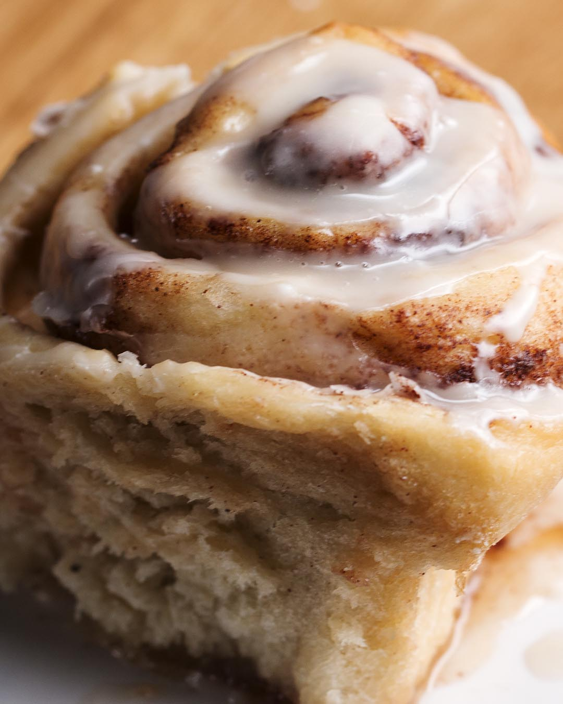

Cinnavon

Description
This recipe is the closest you can get (for now) to a vegan cinnabon. While it's an extremely delicious recipe, it is not healthy at all, though it's very comforting. Will take at least 2-3 hours to complete.
Ingredients
- 2 tablespoons vegan butter
- 2 cups room temperature almond milk
- 1/2 cup vegan butter, melted
- 1/4 cup organic sugar
- 1 packet active dry yeast
- 5 1/2 cups flour, divided
- 1 teaspoon salt
- 3/4 cup vegan butter
- 3/4 cup brown sugar
- 2 tablespoons ground cinnamon
- 1 cup powdered sugar
- 2 tablespoons almond milk
- 1/2 teaspoon vanilla extract
Steps
- Generously rub two disposable foil pie pans with vegan butter.
- In a large bowl, whisk together the almond milk, melted butter, and sugar. The mixture should be just warm, registering between 100-110˚F (37-43˚C). If it is hotter, allow to cool slightly.
- Sprinkle the yeast evenly over the warm mixture and let set for 1 minute.
- Add 5 cups flour and 1 teaspoon of salt to the milk mixture and mix with a wooden spoon until just combined.
- Cover the bowl with a towel or plastic wrap and set in a warm place to rise for 1 hour.
- Preheat oven to 350˚F (180˚C).
- After 1 hour, the dough should have nearly doubled in size.
- Remove the towel and add an additional ½ cup (95g) of flour and salt. Stir well, then turn out onto a well-floured surface.
- Knead the dough lightly, adding additional flour as necessary, until the dough just loses its stickiness and does not stick to the surface.
- Roll the dough out into a large rectangle, about ½-inch (1 cm) thick. Fix corners to make sure they are sharp and even.
- Spread the softened vegan butter evenly over the dough.
- Sprinkle evenly with brown sugar and cinnamon.
- Roll up the dough, forming a log, and pinch the seam closed. Place seam-side down. Trim off any unevenness on either end.
- Cut the log in half, then divide each half into 7 evenly sized pieces. About 1½ inches (8 cm) thick each.
- Place 7 cinnamon rolls in each cake pan, one in the center, six around the sides. Cover with plastic wrap and place in a warm place to rise for 30 minutes.
- To prepare the frosting. In a medium-size mixing bowl, whisk together powdered sugar, almond milk, and vanilla until smooth.
- Remove plastic wrap. Bake the cinnamon rolls in a preheated oven at 350˚F (180˚C) for 25-30 minutes, until golden brown.
- While still warm, drizzle evenly with frosting.
- Enjoy!